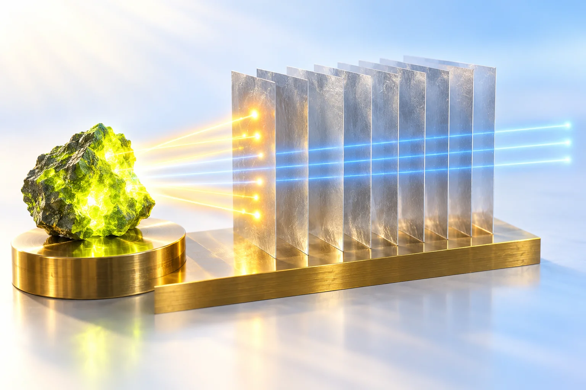
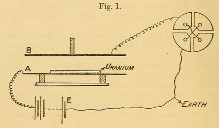
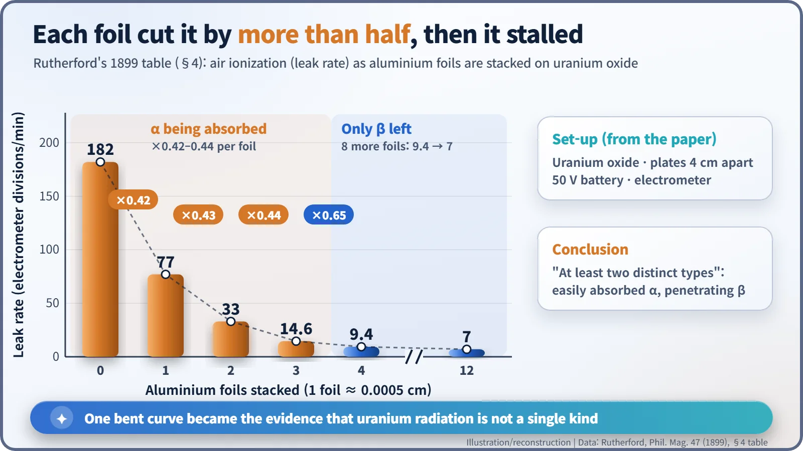
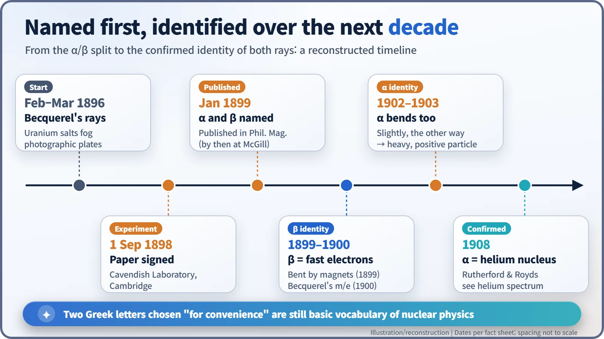

Nuclear History · 009
Thinner Than Kitchen Foil — How Rutherford Split Uranium's Rays into Alpha and Beta (1899)
A stack of foils thinner than kitchen foil revealed that uranium's radiation is a mixture, and gave physics two lasting names.

In 1898, Ernest Rutherford stacked aluminium foils thinner than kitchen foil over uranium oxide and measured how much radiation got through. The readings fell by more than half with each of the first few foils, then almost stopped falling, proving that uranium's radiation is a mixture. He named the easily absorbed part alpha and the penetrating part beta, labels still used today. [1]
A New Zealander arrives at the Cavendish
Rutherford came to Cambridge from New Zealand in 1895 on an 1851 Exhibition Science Scholarship, the first research student admitted to the Cavendish Laboratory under a new rule that welcomed graduates of other universities. His supervisor was J. J. Thomson (1856–1940), who would soon identify the electron. [4]
When X-rays were discovered at the end of that year, the two men studied how X-rays ionize air and make it conduct electricity. Ionization means knocking electrons off atoms so that a gas fills with electrically charged particles. Meanwhile, in 1896, Henri Becquerel in France reported that uranium gives off radiation all by itself. The world, though, was far more excited about X-rays that could photograph bones. Rutherford took the skill he had built in X-ray work, measuring radiation by the ionization it produces, and turned it on Becquerel's uranium rays.
One foil at a time, one number at a time
The apparatus was simple. Uranium oxide was spread evenly on a horizontal zinc plate, and a second zinc plate, 20 cm square, hung 4 cm above it. The lower plate was connected to a 50-volt battery and the upper one to an electrometer, an instrument that detects tiny currents. As the uranium radiation ionized the air between the plates, a minute current flowed, and the speed at which the electrometer needle moved became the measure of the radiation's strength. [1]

Then the foils went on, each about 0.0005 cm (roughly 5 micrometres) thick. The table in the paper reads like a countdown: with no foil, the needle moved 182 divisions per minute; with one foil, 77; with two, 33; with three, 14.6. Each foil cut the signal by a factor of 0.42 to 0.44, a little more than half every time. At four foils the reading was 9.4, and then something changed. Rutherford piled on eight more, twelve in all, and the needle still moved 7 divisions a minute. The signal had barely budged.

| Aluminium foils | Leak rate (divisions/min) | Ratio to previous |
|---|---|---|
| 0 | 182 | — |
| 1 | 77 | 0.42 |
| 2 | 33 | 0.43 |
| 3 | 14.6 | 0.44 |
| 4 | 9.4 | 0.65 |
| 12 | 7 | barely changed |
If the radiation were a single kind, every foil should have taken away the same fraction. A curve that drops steeply and then suddenly flattens out is the fingerprint of two different components mixed together: one that is stopped almost at once, and one that keeps pushing through.
"Termed for convenience the α radiation"
Rutherford put it plainly: "These experiments show that the uranium radiation is complex, and that there are present at least two distinct types of radiation — one that is very readily absorbed, which will be termed for convenience the α radiation, and the other of a more penetrative character, which will be termed the β radiation." Not knowing what either one was, he simply pinned the first two letters of the Greek alphabet on them like luggage tags. He also found that aluminium was "over one hundred times" more transparent to beta than to alpha. [1]
The paper ends with the line "Cavendish Laboratory, September 1, 1898." That same month Rutherford arrived in Montreal to become Macdonald Professor of Physics at McGill University, aged 27, and the paper appeared in the Philosophical Magazine in January 1899. Many accounts say the discovery was made at McGill, but the experiments were done in Cambridge. [4]

The same result through modern eyes
Today we know what the two rays are. An alpha particle is a helium nucleus, two protons and two neutrons bound together. Heavy and doubly charged, it ionizes air fiercely but runs out of energy fast: a few centimetres of air or a single sheet of paper stops it. A beta particle is a fast electron thrown out of a nucleus; it travels further but is stopped by a few millimetres of aluminium. The familiar line "a sheet of paper stops alpha" is correct, but in 1899 the barrier was aluminium foil, not paper. [7]
There is one more twist. Most of the beta radiation Rutherford measured did not come from uranium itself but from "daughter" elements that build up inside uranium, mainly thorium-234 and protactinium-234m. The idea that one element can turn into another was something Rutherford would establish a few years later at McGill, working with Frederick Soddy.
Labels first, identities over a decade
In 1899 Friedrich Giesel in Germany, Stefan Meyer and Egon von Schweidler in Austria, and Becquerel himself reported that part of the radiation from radium bends in a magnetic field the same way cathode rays do (sources differ on who was first). In 1900 Becquerel measured its mass-to-charge ratio and found it close to Thomson's value for the electron, and the Curies showed that beta rays carry negative charge. Beta was settled: fast electrons. [5]
Alpha was far more stubborn. Only in 1902, using a strong radium source, could Rutherford show that alpha rays bend very slightly, in the opposite direction, which made them heavy, positively charged particles (the paper appeared in 1903). In 1908, with Thomas Royds, he collected alpha particles that had passed through the wall of a thin glass tube; after some days, the spectrum of helium appeared in the outer vessel. [2] [6]

That same year Rutherford received the Nobel Prize in Chemistry for his investigations into the disintegration of the elements and the chemistry of radioactive substances, an honour that amused a man who thought of himself as a physicist. He went on to use alpha particles as probes to look inside the atom and found the atomic nucleus. [3] [4]
Radiation protection at today's nuclear power plants still speaks the language of alpha, beta and gamma: alpha matters mainly if it gets inside the body, beta near the skin and eyes. Tags chosen "for convenience" over a stack of foil have now been in use for more than 120 years. [7]
Timeline
| Date | Event |
|---|---|
| 1895 | Rutherford arrives at the Cavendish Laboratory, Cambridge |
| Feb–Mar 1896 | Becquerel reports radiation from uranium |
| 1 Sep 1898 | "Uranium Radiation and the Electrical Conduction Produced by It" signed in Cambridge; Rutherford moves to McGill that month |
| Jan 1899 | Paper published in the Philosophical Magazine; alpha and beta named |
| 1899–1900 | Beta rays bent by magnets and identified as fast electrons |
| 1900 | Paul Villard finds a third, undeflected radiation |
| 1902 | Rutherford shows alpha rays are deflected (published 1903) |
| 1908 | Rutherford and Royds confirm alpha = helium nucleus; Nobel Prize in Chemistry |